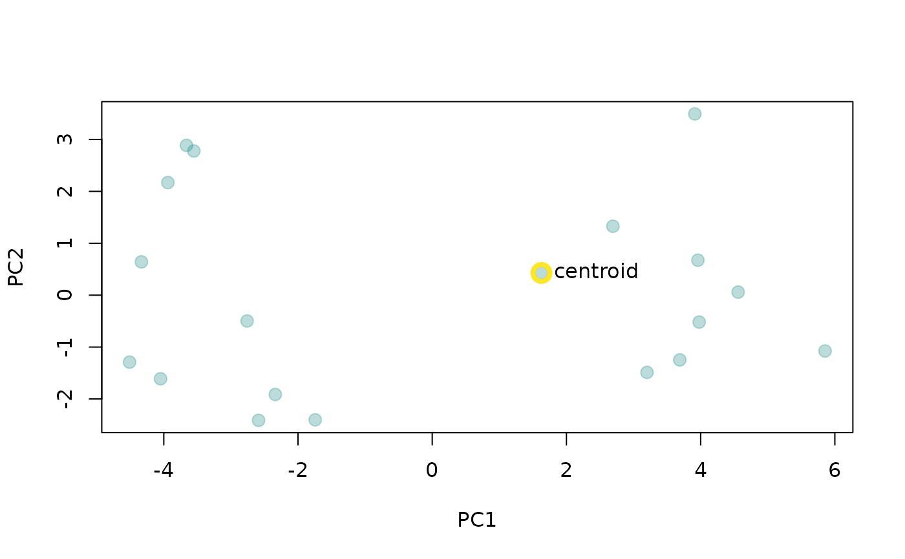
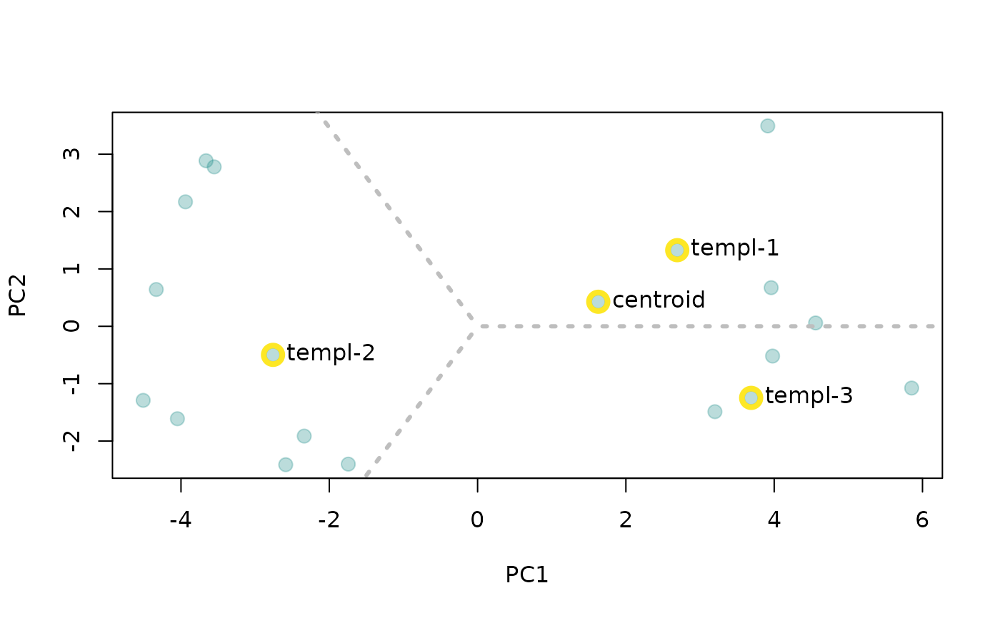

Find templates representative of the structural variation of sound events
Source:R/get_templates.R
get_templates.Rdget_templates find the sound events that are closer to the acoustic space centroid (i.e. close to the average acoustic structure) in a reference table.
Usage
get_templates(reference, acoustic.space = NULL, path = ".",
n.sub.spaces = 1, plot = TRUE, color = "#21908C4D", ...)Arguments
- reference
Selection table (using the warbleR package's format, see
selection_table) or data frame with columns for sound file name (sound.files), selection number (selec), and start and end time of sound event (start and end).- acoustic.space
Numeric matrix or data frame with the two dimensions of a custom acoustic space to be used for finding templates. if not supplied the acoustic space is calculated internally (default). Optional. Note that the function assumes that 'reference' and 'acoustic.space' refer to the same sound events and similarly ordered.
- path
Character string containing the directory path where the sound files are located. The current working directory is used as default.
- n.sub.spaces
Integer vector of length 1 with the number of sub-spaces to split the total acoustic space. If
n.sub.spaces = 1, only the sound event closer to the centroid is returned. Ifn.sub.spaces > 1the function returns additional sound events, corresponding to those closer to the centroids of the sub-spaces. To do this, the function defines sub-spaces as equal-size slices of a circle centered at the centroid of the acoustic space.- plot
Logical to control if the plot is created. Default is
TRUE.- color
Character string with the point color. Default is '#21908C4D'.
- ...
Additional arguments to be passed to
spectro_analysisfor further customization when measuring parameters to calculate the acoustic space.
Value
The function returns a 'selection_table' (warbleR package's formats, see selection_table) or data frame (if sound files can't be found) containing the start and end of each sound event by
sound file.
Details
This function finds sound events (from a reference table) that are representative of the acoustic structure variation of all sound events. This is done by finding the events closer to the centroid of the acoustic space. If the acoustic space is not supplied ('acoustic.space' argument) then the function will estimate it by measuring several acoustic features using the function spectro_analysis (features related to energy distribution in the frequency and time domain as well as features of the dominant frequency contours, see spectro_analysis for more details) and summarizing it with Principal Component Analysis (after z-transforming parameters) using the function prcomp. Acoustic features with missing values are removed before estimating Principal Component Analysis. The rationale is that a sound event close to the average structure is more likely to share structural features with most events across the acoustic space than a sound event in the periphery of the space.
If only 1 template is required the function returns the sound event closest to the acoustic space centroid. If more than 1 template is required additional sound events are returned that are representative of the acoustic space. To do this, the function defines sub-spaces as equal-size slices of a circle centered at the centroid of the acoustic space. A column 'template' is included in the output selection table that identifies each template. Custom acoustic spaces can be supplied with argument 'acoustic.space'. Notice that the function aims to partition spaces in which sounds are somehow homogeneously distributed. When clear clusters are found in the distribution of the acoustic space thus clusters might not match the sub-spaces defined by the function.
References
Araya-Salas, M., Smith-Vidaurre, G., Chaverri, G., Brenes, J. C., Chirino, F., Elizondo-Calvo, J., & Rico-Guevara, A. 2022. ohun: an R package for diagnosing and optimizing automatic sound event detection. BioRxiv, 2022.12.13.520253. https://doi.org/10.1101/2022.12.13.520253
Author
Marcelo Araya-Salas (marcelo.araya@ucr.ac.cr). Implements a modified version of the timer function from seewave.
Examples
{
# Save example files into temporary working directory
data("lbh1", "lbh2", "lbh_reference")
tuneR::writeWave(lbh1, file.path(tempdir(), "lbh1.wav"))
tuneR::writeWave(lbh2, file.path(tempdir(), "lbh2.wav"))
# get a single mean template
template <- get_templates(reference = lbh_reference, path = tempdir())
# get 3 templates
template <- get_templates(reference = lbh_reference, n.sub.spaces = 3, path = tempdir())
}
#> The first 2 principal components explained 0.68 of the variance

#> The first 2 principal components explained 0.68 of the variance
